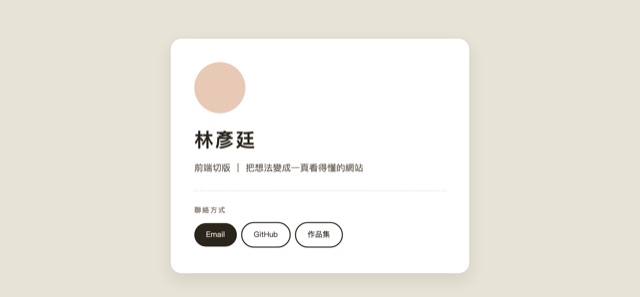
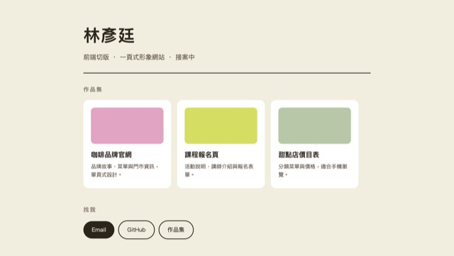
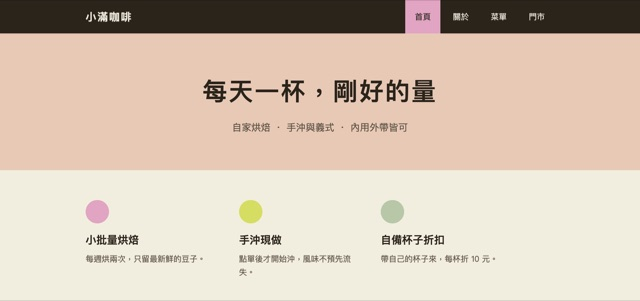
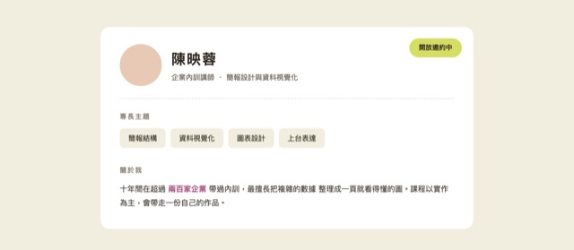
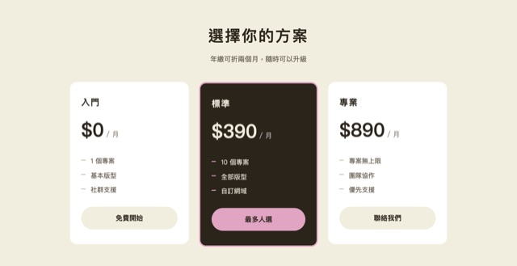
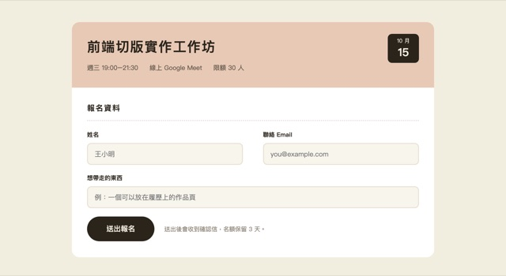
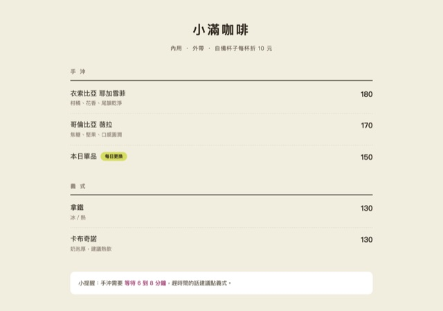

勤益科大進修部 115 學年度第 1 學期
互動式網頁設計
CH3｜CSS 基礎與視覺樣式
替你的網頁穿上衣服
開場
ii
今日目標
- 選取器：CSS 怎麼找到元素，以及誰蓋誰（權重）
- 盒模型：padding、margin、border，控制空間的技術
- 顯示模式：block、inline、inline-block、none
- 定位：static、relative、absolute、fixed
- 排版：字型、字級、字距、行高，決定專業感
- 產出：把上週的自我介紹頁，變成一張數位名片
開場
iii
回顧上週：你已經有骨架了
- HTML 是骨架：標題、段落、連結、圖片、清單
- 兩條規則長出整棵樹：從屬關係、同層關係
- 開發人員工具是你的 X 光機，看得到別人的結構
- 上週的產出：一個純結構、完全沒有樣式的自我介紹頁
開場
iv
從 CodePen 換到 VS Code
- CodePen 適合練單一語法，打開瀏覽器就能寫
- 真實專案是一個資料夾 ＋ 多個檔案，不是一頁網頁
- VS Code 免費、跨平台，是業界最常用的編輯器
- 今天先在瀏覽器上看懂 CSS，課後留下來把環境裝好
開場
v
課後 30 分鐘：把環境裝好
- 到
code.visualstudio.com下載安裝（Windows／macOS 都一樣） - 開一個資料夾
my-site，把上週的自我介紹頁存成index.html - 點左側「擴充」圖示，搜尋並安裝下一頁的三個套件
- 用 VS Code 開啟
index.html，右鍵選 Open with Live Server - 之後只要存檔，瀏覽器就會自動重整——邊改邊看
開場
vi
三個必裝的擴充套件
開場
vii
一個資料夾，就是一個專案
- HTML 放結構、CSS 放外觀，各自一個檔
- 改外觀不必動結構，這就是關注點分離
- CodePen 把兩者塞在同一頁，真實專案會分開
I.
CSS 選取器與權重
語法 · 四種選取器 · 權重與覆蓋
Part 1｜CSS 選取器與權重
ix
CSS 是什麼：把外觀從結構分離
- HTML 回答「這是什麼」
- CSS 回答「它長什麼樣子」
- 同一份 HTML，換一份 CSS 就換一個樣子
Part 1｜CSS 選取器與權重
x
四種選取器與它們的權重
color: red !important;——它不是第五種選取器，而是寫在「值」後面的例外，會蓋掉整份權重。
好用，但會讓後面的維護變難，能不用就不用。
Part 1｜CSS 選取器與權重
xi
權重：同一個元素，誰說話比較大聲
- 多條規則命中同一個元素時，權重高的贏
- 權重相同時，後寫的贏
- 愈「精確」的選取器，權重愈高
- 行內樣式最強，但能不用就不用
Part 1｜CSS 選取器與權重
xii
多重 class：先定義基礎，再局部覆蓋
- 一個元素可以同時掛多個 class
- 第一個 class 定義基礎外觀
- 第二個 class 只負責覆蓋差異
Part 1｜CSS 選取器與權重
xiii
「我明明寫了」的四種原因
- 沒對到：class 拼錯或漏了「.」
- 被蓋掉：行內、id 權重更高
- 順序輸了：同權重，你寫在前面
- 語法壞了：漏分號，整段失效
Part 1｜CSS 選取器與權重
xiv
用檢查元素看「誰贏了」
- 在元素上按右鍵 → 檢查（Inspect）
- 右側 Styles 面板由上往下就是權重順序
- 被槓掉的宣告代表它輸了，滑上去看是誰蓋的
- 打勾／取消打勾可以即時測試，重新整理就還原
Part 1｜動手實作
xv
實作 1：寫下你的第一條 CSS
- 用 VS Code 打開上週寫好的自我介紹頁
- 這次要動的是 CSS（上週完全沒寫）
- 用標籤選取器替
h1換色、加大字級 - 用 class 選取器替某個區塊加背景色與內距
- 存檔，重新整理看差別——裝了 Live Server 會自動重整
II.
盒子模型
padding · margin · border · 空間的藝術
Part 2｜盒子模型
xvii
每一個元素，都是一個盒子
- 瀏覽器把每一個元素都當成矩形盒子來排
- 只有 content 是內容，其餘三層都是空間
- 開發人員工具裡可以逐層看數字
Part 2｜盒子模型
xviii
Padding：把內容撐開
- 內容與邊框之間的距離
- 把內容撐開，讓它不擁擠
- 按鈕的關鍵：有內距才看起來可點
Part 2｜盒子模型
xix
Margin：把鄰居推開
- 元素與其他元素之間的距離
- 推開鄰居，不是撐開自己
margin: 0 auto;讓區塊水平置中
Part 2｜盒子模型
xx
Border 與圓角：框線的三件事
- 框線要指定樣式、粗細、顏色
- 少寫一項，框線就不會出現
border-radius讓硬框變圓潤
Part 2｜盒子模型
xxi
先設定四邊，再微調單邊
Part 2｜盒子模型
xxii
實戰：一行連結，變成一顆按鈕
- 上週的
<a>只是一行有色文字 - 加上內距、背景、圓角
- 它就會看起來像可以按
Part 2｜動手實作
xxiii
實作 2：把你的連結變成按鈕
- 挑一個
<a>或<div>當成按鈕 - 加上
padding，觀察它怎麼「變胖」 - 加上
background與color - 加上
border-radius: 999px做膠囊圓角 - 用
margin把它和其他內容分開
III.
顯示模式 display
block · inline · inline-block · none
Part 3｜顯示模式 display
xxv
display 決定元素怎麼活下去
- block：各佔一整行
- inline：並排，但上下距無效
- inline-block：並排又可調寬高
- none：完全不佔空間
Part 3｜顯示模式 display
xxvi
block：一個佔一行
- 預設佔滿整個寬度
- 前後都會強制換行
- 常見：
<h1>、<p>、<div>
Part 3｜顯示模式 display
xxvii
inline：寬度由內容決定
- 寬度隨內容而定，不換行
- 上下的 margin 與 padding 無效
- 常見：
<a>、<span>、<b>
Part 3｜顯示模式 display
xxviii
inline-block：兩者的優點都拿
- 行內排列（不換行）＋ 區塊操縱（可調寬高）
- 參考教材稱它「最具戰略價值」的模式
- 把垂直清單變成水平導覽列的關鍵
Part 3｜顯示模式 display
xxix
display: none：徹底不存在
- display: none：不渲染也不佔位
- visibility: hidden：佔位但看不見
- opacity: 0：佔位且可以做動畫
- 除錯也很好用：先關掉一半看問題在哪
opacity 或 visibility，不是 display——display 沒有中間狀態。Part 3｜顯示模式 display
xxx
實戰：垂直清單變成水平導覽列
- 上週的
<ul>預設是垂直清單 - 拿掉清單符號，再把
<li>改成 inline-block - 它就會橫向排成一條導覽列
Part 3｜動手實作
xxxi
實作 3：做出你的第一條導覽列
- 把頁面上的
<ul>當成導覽列 - 用
list-style: none拿掉前面的點 - 每個
<li>設display: inline-block - 加上內距，讓每個項目都有可點擊的面積
- 存檔，用 Full Page 全螢幕檢查有沒有爆版
IV.
定位 position
static · relative · absolute · fixed
Part 4｜定位 position
xxxiii
四種定位模式
- static：照文件流排
- relative：相對自己的原位
- absolute：相對定位父層
- fixed：相對瀏覽器視窗
Part 4｜定位 position
xxxiv
relative：相對自己的原位移動
- 相對於自己的原位偏移
- 移動後，原本的空間仍保留
- 不會把其他元素擠走
Part 4｜定位 position
xxxv
absolute：父層一定要設 relative
- 相對最近的一個非 static 父層定位
- 父層沒設 relative，它會一路往上找
- 最慘的結果：定位到整個網頁的邊界
Part 4｜定位 position
xxxvi
fixed：釘在視窗上，捲動也不跑
- 相對於瀏覽器視窗固定
- 捲動時釘在原地不動
- 常見用途：置頂導覽列、蓋版廣告
Part 4｜定位 position
xxxvii
課堂小實驗：2000px 滾輪測試
static 與 absolute 的元素都會往上滑走，唯獨 fixed 會一直釘在畫面上。
Part 4｜動手實作
xxxviii
實作 4：把導覽列釘在頂端
- 在頁面最上方加一個
<header> - 設
position: fixed; top: 0; - 把
body設成height: 2000px才看得出效果 - 捲動頁面，確認它留在頂端沒有跟著跑
- 給下方內容留出空間，別讓導覽列蓋住標題
V.
字體排版美學
字型 · 字級 · 字重 · 字距與行高
Part 5｜字體排版美學
xl
font-family：字型的候選清單
- 中文環境最安全的預設是微軟正黑體
- 寫法是「候選清單」，用逗號分隔
- 前面找不到，就往後退一個
Part 5｜字體排版美學
xli
使用電腦沒有的字型
- 使用者的電腦不一定裝了你寫的字型
- 最簡單：用 Google Fonts 的 webfont
- 要離線：用
@font-face自備字型檔 - 熱門免費中文字型：Noto Sans TC、Noto Serif TC、LXGW WenKai TC
- 到
fonts.google.com挑一個字型 - 把它給的
<link>貼進<head> - 在 CSS 寫
font-family指定它
Part 5｜字體排版美學
xlii
font-size 與 color：建立資訊層級
- 字級決定閱讀順序：標題大、內文小
- 顏色可以到 colorpicker.com 挑
- 全站建議只用 2 到 3 個主要顏色
Part 5｜字體排版美學
xliii
font-weight：用粗細分出重點
- 100（纖細）到 900（極粗）
normal是 400、bold是 700- 中文字型常常只有 400 與 700
Part 5｜字體排版美學
xliv
letter-spacing 與 line-height：呼吸感
letter-spacing字距：標題加一點更透氣line-height行高：內文 1.5 到 1.6 倍最舒服- 中文筆畫密，行高比英文更需要放寬
Part 5｜字體排版美學
xlv
span：只改段落裡的某一個詞
- 想改段落裡某一個詞的顏色
- 用
<span>掛一個 class <span>預設是 inline，不會斷行
Part 5｜動手實作
xlvi
實作 5：把頁面的字調順
- 替
body指定中文字型清單 - 拉開標題與內文的字級差距
- 內文
line-height設 1.6 - 標題加上
letter-spacing - 用
<span>標出段落裡的一句重點
範例
xlvii
課堂示範 ＋ 六個延伸主題
- 名片｜數位名片——課堂一起做的那一張
- A1｜個人作品集頁——接案、求職都用得到的一頁
- A2｜店家一頁式形象頁——小店最常見的網站形式
- A3｜講師個人品牌頁——把專業講清楚的一頁
- B1｜產品定價頁——三種方案的比較頁
- B2｜活動報名頁——講座與工作坊的報名表
- B3｜數位菜單頁——餐飲業的線上菜單
範例｜課堂示範
xlviii
範例｜數位名片

- 要做的區塊：頭像與名字、一句話簡介、聯絡方式列
- 用到今天：margin auto 置中、盒模型、inline-block 聯絡列、多重 class
- 場景：課堂跟著做的完成版，跟不上就看這一頁
延伸練習｜A 組 入門
xlix
範例 A1｜個人作品集頁

- 要做的區塊：名字與一句話定位、三張作品卡、聯絡方式列
- 用到今天：盒模型撐開卡片、inline-block 三欄並排、字級層級
- 場景：接案或求職時，直接給對方看的一頁
延伸練習｜A 組 入門
l
範例 A2｜店家一頁式形象頁

- 要做的區塊：置頂導覽列、主視覺大字、三個賣點
- 用到今天：fixed 定位、inline-block 導覽列、盒模型的留白節奏
- 場景：小店、工作室最常見的「一頁式形象網站」
延伸練習｜A 組 入門
li
範例 A3｜講師個人品牌頁

- 要做的區塊：一張大卡片、右上角徽章、專長標籤、一段自介
- 用到今天：relative + absolute 定位、字級層級、用 span 標出重點
- 場景：講師、顧問、接案工作者的自我介紹頁
延伸練習｜B 組 挑戰
lii
範例 B1｜產品定價頁

- 要做的區塊：三張方案卡、推薦方案加深、每張一個按鈕
- 用到今天：inline-block 三欄、border 與圓角、用對比色拉出層級
- 場景：SaaS、顧問服務最常被要求做的頁面
延伸練習｜B 組 挑戰
liii
範例 B2｜活動報名頁

- 要做的區塊：活動資訊卡、日期標籤、表單欄位、送出按鈕
- 用到今天：absolute 日期標籤、label 用 block 換行、按鈕的可點擊面積
- 場景：講座、工作坊、課程的報名頁
延伸練習｜B 組 挑戰
liv
範例 B3｜數位菜單頁

- 要做的區塊：分類標題、品項與價格、底部提醒區塊
- 用到今天：inline-block 左右對齊、span 標重點、字距與行高
- 場景：餐飲業的線上菜單，手機打開就看得到
收尾
lv
今日回顧：五個技術點，一條線
- 選取器：先找得到元素，權重才決定誰贏
- 盒模型：padding 撐自己，margin 推別人
- display：block 換行、inline 不換行、inline-block 兩者兼具
- position：absolute 記得「父層要 relative」
- 排版：字型、字級、字距、行高，決定專業感
收尾
lvi
今天帶走的東西
- 你的資料夾裡，有一份加上 CSS 的頁面了
- 課後 30 分鐘留下來裝 VS Code，裝好再回來做範例
- 七個範例挑有興趣的做，做多少算多少
- 下次 CH4：Tailwind CSS 快速上手與 RWD 響應式排版
Q & A
CSS 寫不出效果、找不到誰蓋誰的同學，留下來現場處理。